(An)sprechende Anwendungen mit Alexa
Spartakiade 2018
Frank Pommerening

- Senior - Softwareentwickler
- Consultant
- Softwarearchitekt
frank@pommerening-online.de
Gründung: Mai 2012
Anzahl Mitarbeiter: 8 feste
Branchenfokus: Energiebranche
- Consulting (fachlich & IT)
- Requirements Engineering / Projektmanagement
- IT-Fachprozess-Analyse / Dokumentation
- Software-Entwicklung
- Microservices, SOA, REST, OOA und OOD
- Microsoft Technologien z.B. .NET (C#), WPF, WCF
- Datenbanken (MS SQL Server / Oracle / MongoDB)
Amazon Developer Console
Alexa Skill Kit
Entwicklerportal öffen
https://developer.amazon.com/de/alexa 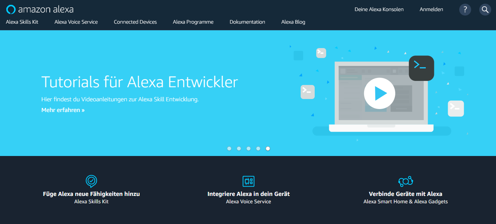Anmelden mit Amazon-Konto
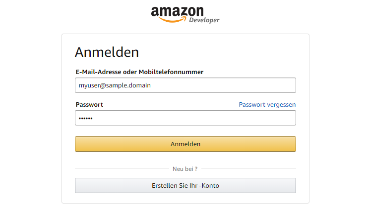Für die Verwendung eigener Alexa-Geräte muss das zugehörige Konto verwendet werden.
Konsole öffnen
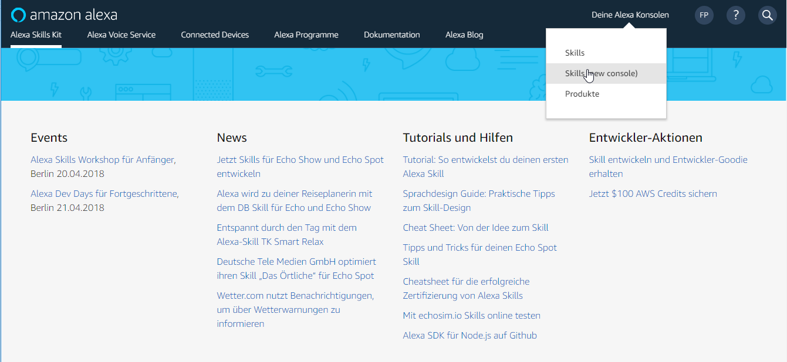Hinweis: die folgenden Beispiele verwenden ausschließlich das neue Portal.
Übersicht der Skills
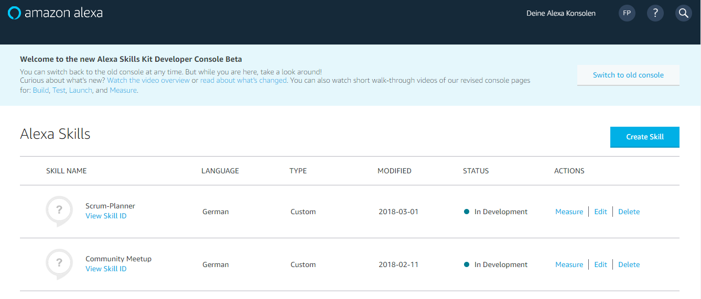Interaction Modell
Spracherkennung
Skill erstellen
Name und Sprache auswählen.Wichtig: der Name steht in keiner Beziehung zum Aufruf! 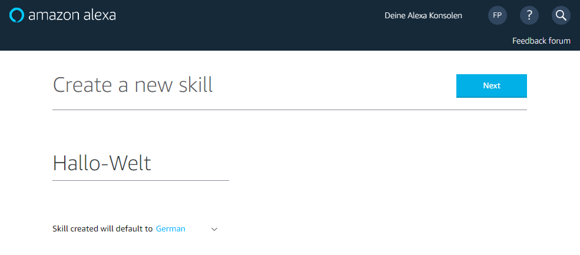
Auswahl Skill-Typ
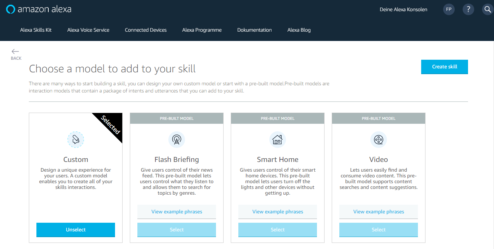Auswahl Skill-Typ
Console - Übersicht
Änderungen am Interaction Modell müssen gespeichert und gebaut werden.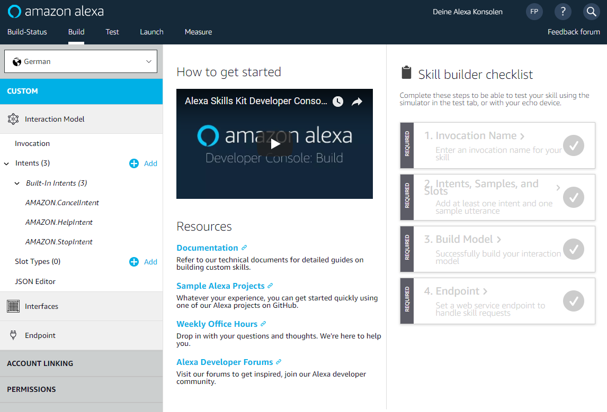
Invocation Name (Skill-Aufruf)
Vorgabe / Limitierungen 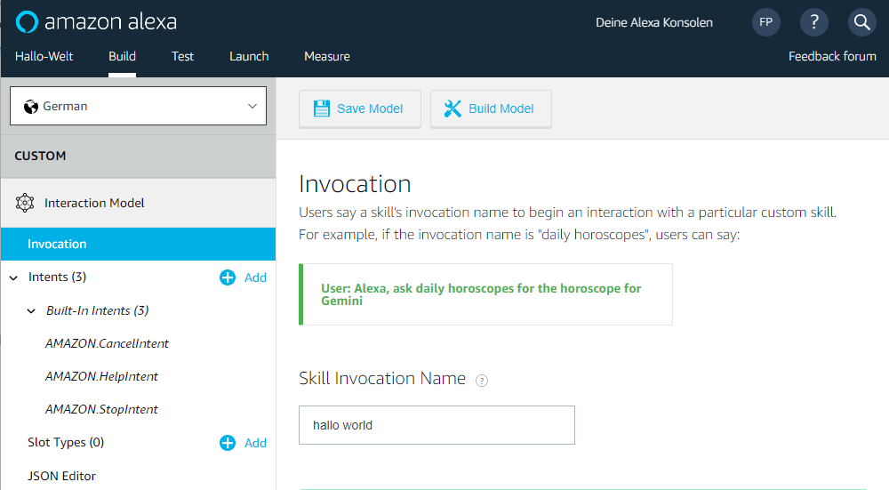- nur Kleinbuchstaben
- Zahlen müssen ausgeschrieben
sein z.B. 2 - zwei - keine Start-Formulierung
wie Starte, Lade, Sage ... - keine Weck-Formulierung
wie Alexa, Computer, Echo ...
Intents
Technische Bezeichnungen der Befehle innerhalb des Skills.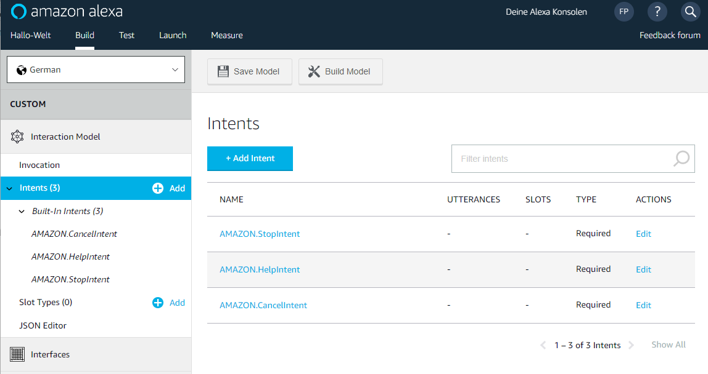
Eigene Intents
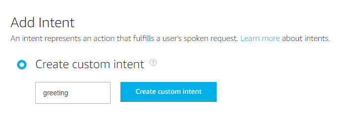Vorgabe / Limitierungen
- nur Kleinbuchstaben
- keine Sonderzeichen - außer Unterstrich
- keine Leerzeichen oder Zahlen
Standard-Intents
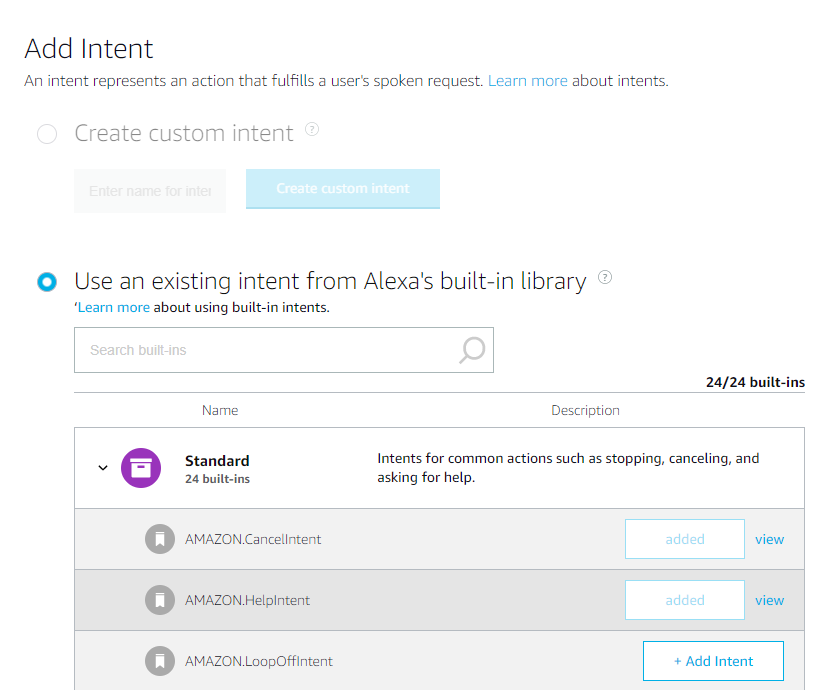 Standard-Befehle werden inkl. Redewendungen durch Amazon bereitgestellt. Diese müssen, soweit noch nicht vorhanden, zugeordnet werden.Beispiele
- AMAZON.YesIntent
- AMAZON.NoIntent
- AMAZON.HelpIntent
- AMAZON.StopIntent
Utterances (Redewendungen)
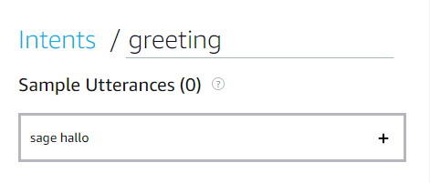 Zuordnung umgangssprachlicher Formulierung(en) zum Intent. Je mehr Formulierungen um so besser die Benutzerinteraktion. 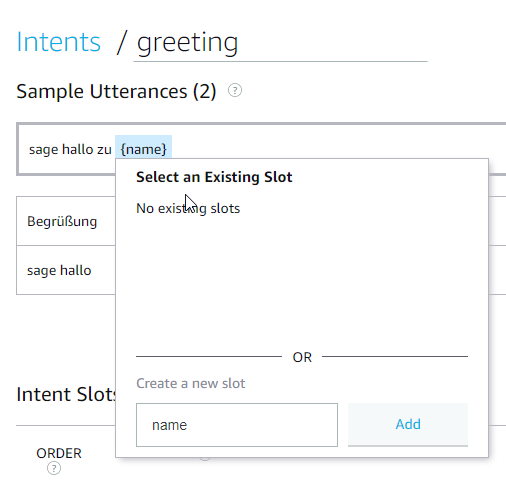In der Formulierung können Platzhalter (Slots) definiert werden. Jedem Slot ist ein Slot-Type zuzugeordnet.
Die Definition der Slots gilt je Intent. 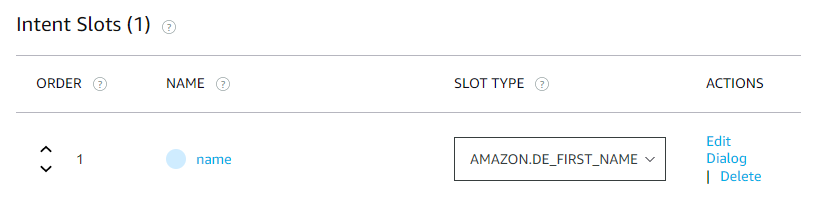
Slot Types (BuildIn)
Die Auswahl Build-Slot-Types ist abhängig von der Sprache.Beispiel AMAZON.Actor ist nur in Englisch (US) verfübar.
Die Liste z.B. Städte oder Vornamen werden durch Amazon bereitgestellt - können aber erweiteret werden.
Der Sondertyp AMAZON.SearchQuery erlaubt einen Platzhalter ohne vordefinierte Werte. Je Intent ist nur ein Platzhalter des Types zulässig.
Zahlen, Daten, Zeiten
| Name | Bedeutung | Beispiele |
|---|---|---|
| AMAZON.DATE | Datum im ISO-8061 Format | Heute, Morgen, nächste Woche, dieses Jahr |
| AMAZON.Time | Zeit im ISO-8061 Format | Jetzt, Mitternacht, drei Uhr |
| AMAZON.DURATION | Zeitraum im ISO-8061 Format | drei Tage, acht Wochen, zehn Minuten |
| AMAZON.NUMBER | Zahlen | eins, dreiundzwanzig |
Listen
Die erkannten Werte der Listen sind immer kleingeschrieben.| Name | Bedeutung | Beispiele |
|---|---|---|
| AMAZON.DE_REGION | dt. geografische Regionen | sachsen |
| AMAZON.DE_CITY | dt. Städte | berlin, leipzig |
| AMAZON.EUROPE_CITY | Städte (Europa / Welt) | london, paris |
| AMAZON.DE_FIRST_NAME | deutsche Vornamen | frank, anna |
| AMAZON.US_FIRST_NAME | englische Vornamen | steve, opera |
Slot Types (Custom)
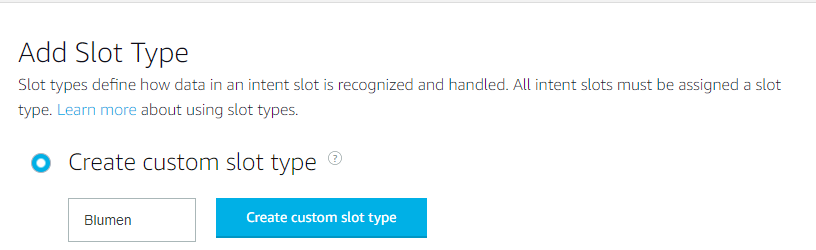 Als Ergänzung können einige Slot-Types definiert werden.Vorgaben: Buchstaben oder Unterstriche 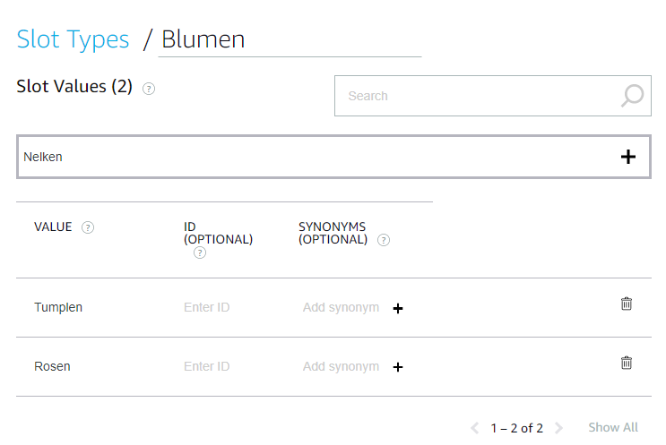
Synonyme und Id sind dabei optional.
Slot-Types werden auf Skill-Ebene verwaltet.
Endpoint
Der Endpunkt stellt die Verbindung zur Sprachverarbeitung dar.Amazon AWS Lambda
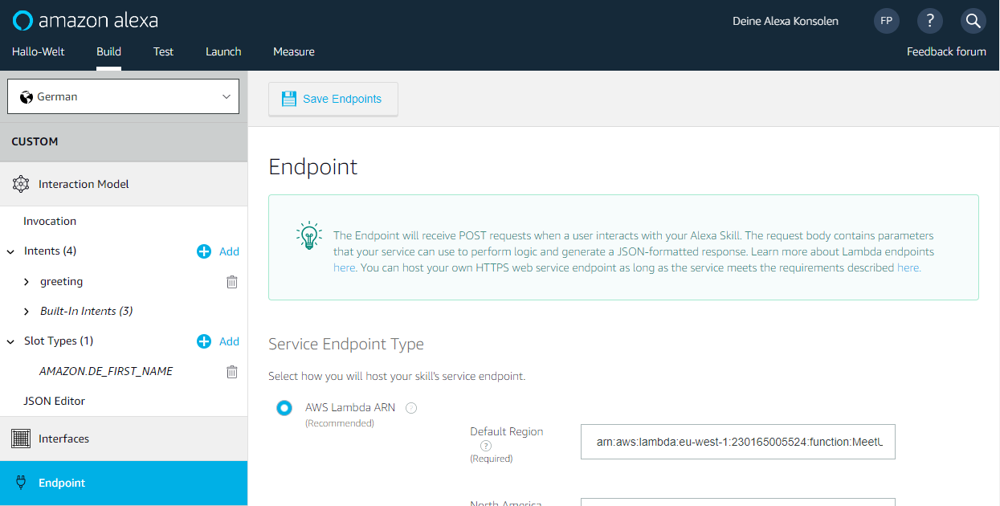Endpoint (HTTPS)
Erlaubt die Verwendung eines beliebigen Endpunkts z.B. Azure Function. 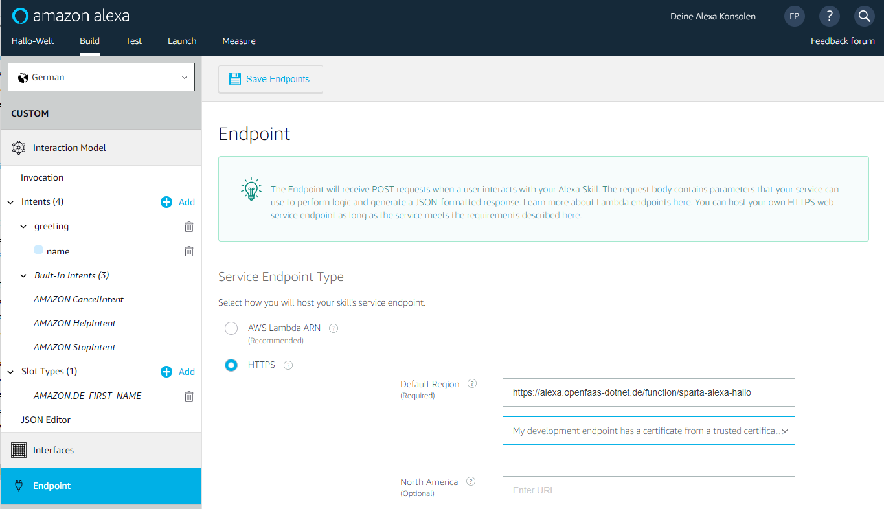Szenario Build-Status
Ziel: Skill nennt den aktuellen Build-StatusIntent: buildstatus
HTTPS-Endpoint : https://alexa.openfaas-dotnet.de/function/sparta-alexa-build
Szenario Scrum-Planer (Interaction Modell)
Es soll eine Voice-UI zur Planung der Scum-Meeting erstellt werden.Das Entwickler-Team soll
- Termine erstellen
- Termin(e) nennen
- Mitarbeiter zum Termin einladen
- Mitarbeiter aus Termin entfernen
Randbedingungen
Srum-Meetings: Sprint Planning, Sprint Retrospective und Sprint Review
Jeder Mitarbeiter ist per Vorname eindeutig zu identifizieren.
Backends
Amazon AWS Lambdas
Microsoft Azure Functions
OpenFaaS
Backends
Aktivierung Test für Skill
Vor dem Testen muss der Skill dafür aktiviert werden.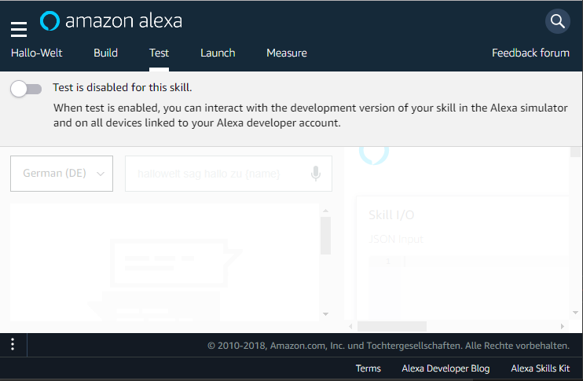
Testconsole
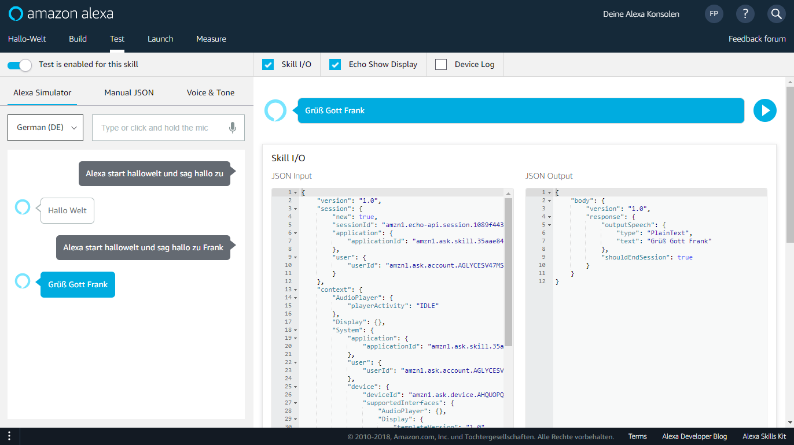Testeingabe
Die Eingabe erfolgt per- per Texteingabe
- per Sprache (Verwendung des System-Mikrofon)
- als manuelles JSON
Auf Alexa-Geräten die dem eigenen Account zugeordnet sind, kann getestet werden auch ohne Veröffentlichung des Skills.
Nach Eingabe der Informationen zur Veröffentlichung können Beta-Tester eingeladen werden.
Sprachausgaben
Im Bereich Voice & Tone können Sprachausgaben inkl. SSML erprobt werden.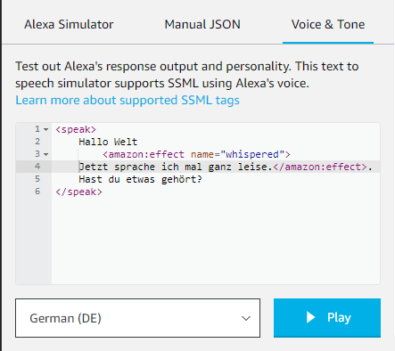
Die Aussprache unterscheidet sich ja nach gewählter Sprache.
Beta-Tests
Nach Eingabe der Informationen zur Veröffentlichung können Beta-Tester eingeladen werden.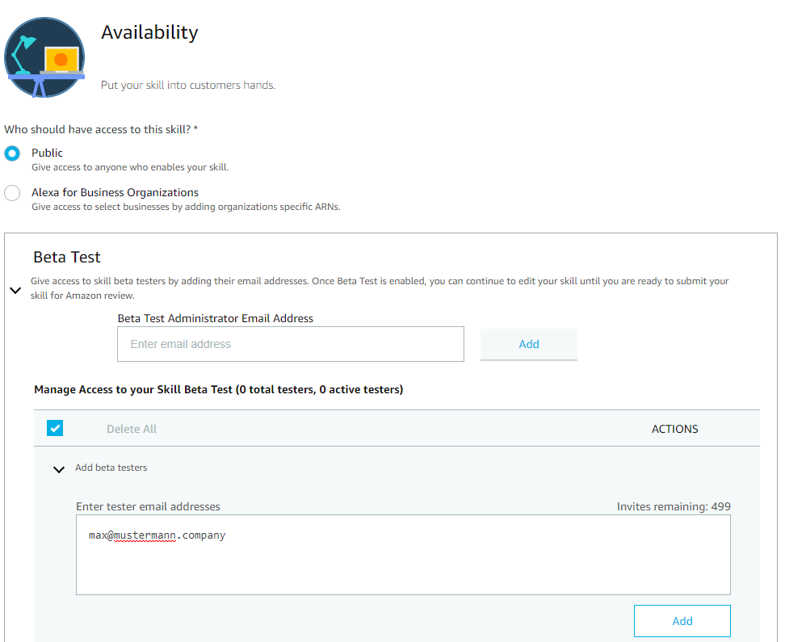
Spracheverarbeitung
SSML (Speech Synthesis Markup Language)
Neben reinem Text kann mittels SSML Einfluss auf die Sprachausgabe genommen werden und Effekte ergänzt werden.Flüstern
Anderer Text
Text ganz leise. .
Weiterer Text
Pausen
Woll'n mal überlegen
Ja ich nehm das Steak.
Telefonnummern
035125613710
Datumswerte
2005-02-29
Buchstabieren
2005-02-29
Alexa Skills Kit Sound Library
Die Bibliotkel stellt eine Anzahl von Effektsounds bereit.Die Einbindung erfolgt per Audio-Tag.
Technische Vorgabe: MP3-Format, 48kbps, 16kHz.
Speechcons
Speechcons sind Formulierungen die speziell betont werden.Die Auswahl ist sprachabhängig.
ähm
achtung
der Kaffee ist heiß!
Benutzer-Authentifizeriung
In der Session bzw. im Context wird die UserId übermittelt.{
"version": "1.0",
"session": {
"user": {
"userId": "amzn1.ask.account.AGLYCESV47M..."
}
},
"context": {
"System": {
"user": {
"userId": "amzn1.ask.account.AGLYCESV47M..."
}
}
}
}Zustandverwaltung
Die Aufrufe des Backends sind per Default zustandslos.Externe Speicherung
Je Konversation wird eine Session-Id erstellt und bei jedem Aufruf übertragen. Die Id kann als Key für einen extere Datenspeicher (Redis, S3, ...) dienen.{
"version": "1.0",
"session": {
"new": true,
"sessionId": "amzn1.echo-api.session.eaa1",
}
}Interne Speicherung
Für kleine Datenmengen kann der Key-Value-Store SessionAttributes verwendet werden.Dieser steht im Request und Respone zur Verfügung.
{
"version": "1.0",
"sessionAttributes": {
"key1": "value1",
"key2": "value2"
}
}Szenario Scrum-Planer (Backend)
Es soll eine Voice-UI zur Planung der Scum-Meeting erstellt werden.Das Entwickler-Team soll
- Termine erstellen
- Termin(e) nennen
- Mitarbeiter zum Termin einladen
- Mitarbeiter aus Termin entfernen
Randbedingungen
Srum-Meetings: Sprint Planning, Sprint Retrospective und Sprint Review
Jeder Mitarbeiter ist per Vorname eindeutig zu identifizieren.